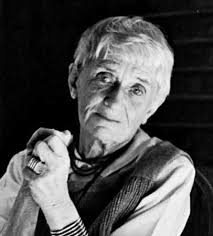

He introduced the
concept known as “The Decisive Moment” His exceptional skill in capturing instances with precision and artistic flair
revolutionized photography.
He introduced the
concept known as “The Decisive Moment” His exceptional skill in capturing instances with precision and artistic flair
revolutionized photography.
Photography as a form of art possesses an ability to capture good moments and immortalize them indefinitely. Throughout time, certain photographers have taken this craft to heights leaving an imprint on the realm of visual storytelling. In this article, we honor the most famous photographers in history, whose contributions have profoundly influenced our perception and appreciation of the world.
The list starts with Ansel Adams who was renowned for his awe-inspiring landscapes. His groundbreaking utilization of the zone system and his unwavering dedication to conservation exerted an impact on both expression and environmental consciousness. He was one of the No. 1 American photographers of the 20th century. His photography career started in the year 1921 when his work was published.
Yosemite-valley, winter
Dorothea Lange’s documentary photography during the Great Depression humanized the consequences brought forth by turmoil.  Her compassionate approach and ability to encapsulate emotions made her work an influential catalyst for transformation.
Migrant Mother
Henri Cartier Bresson is often hailed as the pioneer of photojournalism. He co-founded Magnum Photos.
He introduced the
concept known as “The Decisive Moment” His exceptional skill in capturing instances with precision and artistic flair
revolutionized photography.
Behind the Gare Saint-Lazare
Annie Leibovitz is renowned for her iconic portraits of celebrities. Her work is marked by compositions and dramatic lighting contributing to shaping portraiture.
John Lennon and Yoko Ono
Steve McCurry has gained acclaim for his photojournalism often focusing on conflict zones and human rights issues. Through his emotionally charged imagery, he tells stories that have left a lasting impact on the world.

Afghan Girl